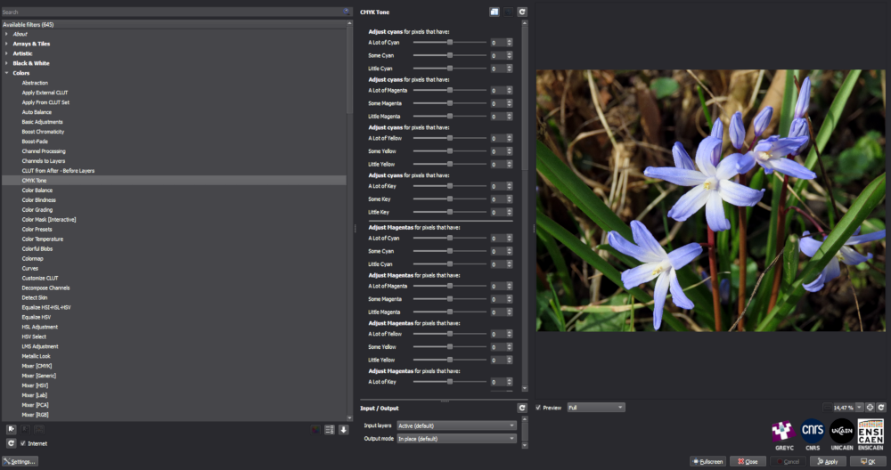

G'MIC is an extremely powerful framework for digital image processing, which is constantly being updated. You can use it as a stand-alone application, as a plug-in for the most widely used pixel editors, including GIMP and Photoshop, as a command-line tool, as a library, and also as a web service. There is even a an OpenFX port for video editors available. Krita includes G'MIC by default. For other image editors you need to install it separately.
 |
There are some downsides, however. One is that it's only available with an English UI. The other is that this is mostly an academic project, which means you need to have profound knowledge of colour science and the intricacies of image processing to make full use of all of the options. The upside is that there are also many relatively uncomplicated features to unleash your creativity, and there's always a preview.